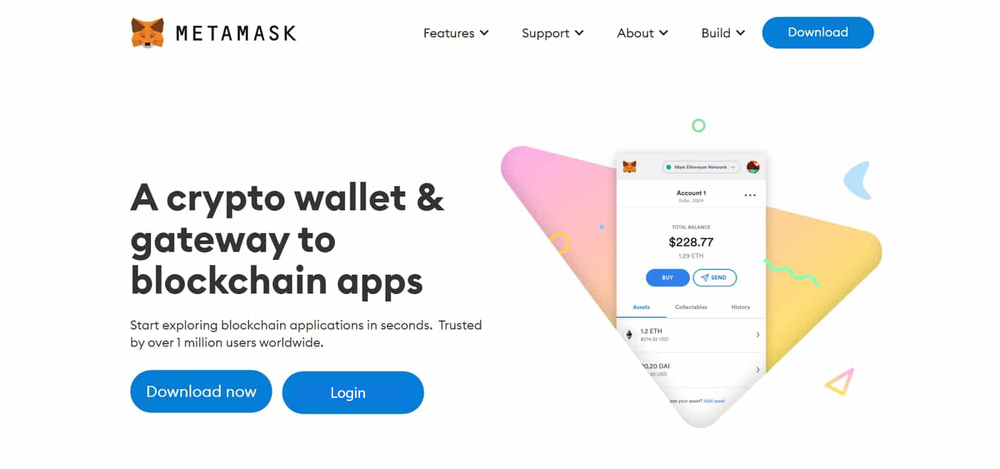

MetaMask® Login: Navigating the Blockchain Ecosystem with Secure Simplicity
In the ever-expanding realm of blockchain and decentralized finance (DeFi), MetaMask has emerged as a pivotal tool, providing users with a secure and user-friendly gateway into the world of cryptocurrencies. As a blockchain wallet and gateway to the decentralized web, MetaMask has become synonymous with simplicity, flexibility, and cutting-edge security.
MetaMask functions as both a cryptocurrency wallet and a bridge to decentralized applications (DApps) on various blockchain networks. Launched in 2016, MetaMask quickly gained popularity for its browser extension that facilitates seamless interaction with the Ethereum blockchain. Over time, MetaMask expanded its capabilities to support multiple blockchains, including Binance Smart Chain and Polygon, amplifying its utility in the evolving blockchain ecosystem.
One of MetaMask's standout features is its emphasis on simplicity, making it accessible to users with varying levels of experience. The platform offers a user-friendly interface that simplifies the often complex processes associated with blockchain technology. Creating an account and managing digital assets on MetaMask is straightforward, making it an ideal choice for both beginners and seasoned cryptocurrency enthusiasts.
Security is paramount in the world of cryptocurrencies, and MetaMask takes this aspect seriously. The platform employs state-of-the-art encryption methods to secure private keys, ensuring that users have complete control over their funds. MetaMask also offers users the option to create a secure password and use biometric authentication for an additional layer of protection. By prioritizing security, MetaMask has earned the trust of millions of users worldwide.
MetaMask's compatibility with a wide range of decentralized applications is a key factor contributing to its popularity. Users can seamlessly interact with a diverse array of DApps, ranging from decentralized exchanges and lending platforms to blockchain-based games. This versatility positions MetaMask as a central hub for users looking to explore and engage with the decentralized web.
One notable feature of MetaMask is its integration with decentralized finance protocols. Users can leverage MetaMask to participate in lending, borrowing, and yield farming, among other financial activities, all within the secure confines of their MetaMask wallet. This integration with DeFi reflects MetaMask's commitment to staying at the forefront of blockchain innovation.
As blockchain technology continues to evolve, MetaMask remains agile, adapting to new developments and integrating with emerging blockchain networks. This adaptability ensures that MetaMask users have access to a growing ecosystem of decentralized applications and can explore the full potential of blockchain technology.
Educational initiatives by MetaMask further enhance its appeal. The platform provides users with resources, guides, and tutorials to deepen their understanding of blockchain technology and maximize their experience with MetaMask. This commitment to education aligns with the broader goal of fostering a more informed and empowered user base in the blockchain space.
In conclusion, MetaMask's evolution from a simple Ethereum wallet to a versatile gateway for various blockchain networks underscores its significance in the cryptocurrency landscape. With its focus on simplicity, security, versatility, and educational support, MetaMask continues to be a trusted companion for users navigating the complexities of the blockchain ecosystem, exemplifying the transformative potential of decentralized technologies.